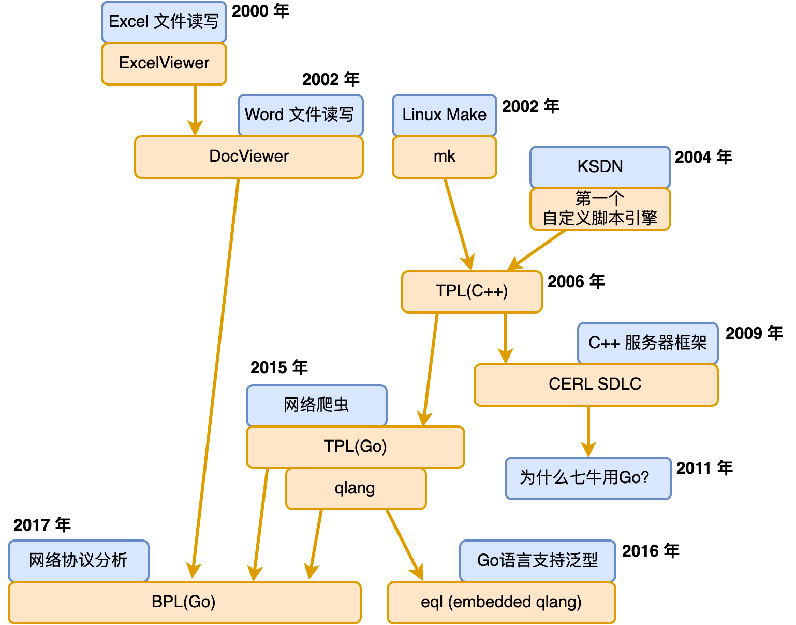

- 00 开篇词 怎样成长为优秀的软件架构师？.md.html
- 01 架构设计的宏观视角.md.html
- 02 大厦基石：无生有，有生万物.md.html
- 03 汇编：编程语言的诞生.md.html
- 04 编程语言的进化.md.html
- 05 思考题解读：如何实现可自我迭代的计算机？.md.html
- 06 操作系统进场.md.html
- 07 软件运行机制及内存管理.md.html
- 08 操作系统内核与编程接口.md.html
- 09 外存管理与文件系统.md.html
- 10 输入和输出设备：交互的演进.md.html
- 11 多任务：进程、线程与协程.md.html
- 12 进程内协同：同步、互斥与通讯.md.html
- 13 进程间的同步互斥、资源共享与通讯.md.html
- 14 IP 网络：连接世界的桥梁.md.html
- 15 可编程的互联网世界.md.html
- 16 安全管理：数字世界的守护.md.html
- 17 架构：需求分析 (上).md.html
- 18 架构：需求分析 (下) · 实战案例.md.html
- 19 基础平台篇：回顾与总结.md.html
- 20 桌面开发的宏观视角.md.html
- 21 图形界面程序的框架.md.html
- 22 桌面程序的架构建议.md.html
- 23 Web开发：浏览器、小程序与PWA.md.html
- 24 跨平台与 Web 开发的建议.md.html
- 25 桌面开发的未来.md.html
- 26 实战（一）：怎么设计一个“画图”程序？.md.html
- 27 实战（二）：怎么设计一个“画图”程序？.md.html
- 28 实战（三）：怎么设计一个“画图”程序？.md.html
- 29 实战（四）：怎么设计一个“画图”程序？.md.html
- 30 实战（五）：怎么设计一个“画图”程序？.md.html
- 31 辅助界面元素的架构设计.md.html
- 32 架构：系统的概要设计.md.html
- 33 桌面开发篇：回顾与总结.md.html
- 34 服务端开发的宏观视角.md.html
- 35 流量调度与负载均衡.md.html
- 36 业务状态与存储中间件.md.html
- 37 键值存储与数据库.md.html
- 38 文件系统与对象存储.md.html
- 39 存储与缓存.md.html
- 40 服务端的业务架构建议.md.html
- 41 实战（一）：“画图”程序后端实战.md.html
- 42 实战（二）：“画图”程序后端实战.md.html
- 43 实战（三）：“画图”程序后端实战.md.html
- 44 实战（四）：“画图”程序后端实战.md.html
- 45 架构：怎么做详细设计？.md.html
- 46 服务端开发篇：回顾与总结.md.html
- 47 服务治理的宏观视角.md.html
- 48 事务与工程：什么是工程师思维？.md.html
- 49 发布、升级与版本管理.md.html
- 50 日志、监控与报警.md.html
- 51 故障域与故障预案.md.html
- 52 故障排查与根因分析.md.html
- 53 过载保护与容量规划.md.html
- 54 业务的可支持性与持续运营.md.html
- 55 云计算、容器革命与服务端的未来.md.html
- 56 服务治理篇：回顾与总结.md.html
- 57 心性：架构师的修炼之道.md.html
- 58 如何判断架构设计的优劣？.md.html
- 59 少谈点框架，多谈点业务.md.html
- 60 架构分解：边界，不断重新审视边界.md.html
- 61 全局性功能的架构设计.md.html
- 62 重新认识开闭原则 (OCP).md.html
- 63 接口设计的准则.md.html
- 64 不断完善的架构范式.md.html
- 65 架构范式：文本处理.md.html
- 66 架构老化与重构.md.html
- 67 架构思维篇：回顾与总结.md.html
- 68 软件工程的宏观视角.md.html
- 69 团队的共识管理.md.html
- 70 怎么写设计文档？.md.html
- 71 如何阅读别人的代码？.md.html
- 72 发布单元与版本管理.md.html
- 73 软件质量管理：单元测试、持续构建与发布.md.html
- 74 开源、云服务与外包管理.md.html
- 75 软件版本迭代的规划.md.html
- 76 软件工程的未来.md.html
- 77 软件工程篇：回顾与总结.md.html
- 加餐 如何做HTTP服务的测试？.md.html
- 加餐 实战：“画图程序” 的整体架构.md.html
- 加餐 怎么保障发布的效率与质量？.md.html
- 热点观察 我看Facebook发币（上）：区块链、比特币与Libra币.md.html
- 热点观察 我看Facebook发币（下）：深入浅出理解 Libra 币.md.html
- 用户故事 站在更高的视角看架构.md.html
- 答疑解惑 想当架构师，我需要成为“全才”吗？.md.html
- 结束语 放下技术人的身段，用极限思维提升架构能力.md.html
- 课外阅读 从《孙子兵法》看底层的自然法则.md.html
- 捐赠
65 架构范式：文本处理
65 | 架构范式：文本处理你好，我是七牛云许式伟。
上一讲 “[64 | 不断完善的架构范式]” 我们提到架构师的武器库是不断完善的架构范式。今天我们围绕一个具体的问题域，看看我们日常能够积累什么样的经验和成果，来完善作为一个架构师的知识体系。
我们选择的问题是 “文本处理”。
计算机之所以叫计算机，是因为计算机的能力基本上就是“计算+I/O”两部分。I/O 只是为了让计算机与物理世界打交道，它也是为计算服务的。所以数据是软件的灵魂，数据处理是软件的能力。
今天我们聊的文本处理，不是通用的数据处理能力，而是收敛在数据的 I/O 上。这里说的文本，是指写入到磁盘的非结构化数据。它可能真的是文本内容，比如 HTML 文档、CSS 文档；也可能是二进制内容，比如 Word 文档、Excel 文档。文本处理则是指对这类非结构化数据的处理过程，常见文本处理的需求场景有：
- 数据验证（Data Validation）。比如判断用户输入的文本是否合法，值的范围是否符合期望。
- 数据抽取（Data Extraction）。比如从某 HTML 页面中抽取出结构化的机票信息（什么时间，从哪里出发，到哪里去，价格几何等等）。
- 编译器（Compiler）。特殊地，在文本格式是某种语言的代码时，我们可以将文本编译成可执行的机器码，或虚拟机解释执行的字节码。当然我们也可以边解释文本的语义边执行。
- ……
从用户需求的角度来说，文本处理的需求场景是不可穷尽的。网络爬虫与搜索引擎需要文本处理，Office 软件需要文本处理，编程语言的编译器需要文本处理，网络协议解析需要文本处理，等等。
那么，怎么才能从这些多变的需求场景中，抽出正交分解后可复用的架构范式？
我们今天聊聊文本处理的通用思路。
我的文本处理技术栈演进
文本处理，很多人都会遇到，只不过大家各自遇到的场景不同。我这里先回顾下我个人遇到的文本处理场景。我总结了一个图，如下：

在 2000 年初，我作为实习生拿到的第一个任务，是金山电子表格自身的文件格式设计和 Excel 文件的读写。此后，我参与了多个版本的 Word 文件读写工作。为了便于分析 Excel 和 Word 文件的格式，我实现了 ExcelViewer 和 DocViewer 这两个文件格式查看器。
实际上这两个 Viewer 非常重要，因为它第一次让文件格式的理解过程用程序固化了下来。这非常利于知识传承。大家可以设想一下，假如没有 Viewer，那么后面接手的人基本上只能靠阅读 ExcelReader 和 DocReader 模块的代码来理解文件格式。
但是这有两个问题。其一，Reader 模块有大量的业务逻辑，对我们理解 Excel 和 Word 文件格式本身会造成干扰。其二，Reader 模块增加功能会比较慢，对于那些我们本身不支持的功能，或者我们还暂时来不及兼容的功能，是没有对应的解析代码的。
但是 Viewer 就不一样。我们会尽可能地把我们对 Excel 和 Word 的理解记录下来，成为稳定可传承的知识，而无需关心是否已经支持该功能。另外，从时间的维度来说，应该先有 Viewer，在理解了文件格式之后，再设计出 Reader 才比较合理。
这个时期的 ExcelViewer 和 DocViewer，它主要抽象出来的是界面呈现部分。具体 ExcelViewer 和 DocViewer 的代码不需要有一行涉及到界面。这有诸多好处。实际上可视化界面只是 ExcelViewer 和 DocViewer 的一种输出终端，它们同时也生成了一个纯文本结果到磁盘文件中。这有助于我们用常规的 diff 工具来对比两个文件的差异，从而加速我们对未知数据格式的了解。
但，此时的 ExcelViewer 和 DocViewer 并没有将文件格式的处理过程抽象出通用的模块。也可以说，还没有抽象出文本处理范式。
这个时期同期还有一个探索性的 WPS for Linux 项目。为了支持跨平台编译，我实现了一个简单的 mk 程序。这个程序区别于 Linux 标准化的 make 程序，没有那么复杂的逻辑需要理解。它的输入是一个类 Windows 平台的 ini 文件，里面只需要指定选择的编译器、相关的编译选项、源代码文件列表等，就可以进行编译。甚至源代码列表可以直接指定为从 Visual C++ 的项目配置 dsp 文件中抽取，极易使用。
这个 mk 程序除了要解析一个类 ini 的配置文件外，也会解析 C/C++ 源代码文件形成源代码文件的依赖表，以更好地支持增量编译。不只是源代码文件本身的修改会触发重新编译，任何依赖文件的修改也会触发重新编译。
同样地，这个时期的 mk 程序同样没有引入任何通用的文本处理范式。
此后大约在 2004 年，我开始在金山办公软件内部推 KSDN。KSDN 这个名字承自 MSDN，我们希望打造一个全局的文档系统，它自动从项目的源代码中提取并生成。每天日构建完毕后得到最新版本的 KSDN。
KSDN 处理的输入主要是 C++ 和 Delphi 源代码文件（当时的界面是 Delphi 写的），是纯文本的。这和 ExcelViewer、DocViewer 不同，他们的输入是二进制文件。
KSDN 第一次引入了一个通用的脚本，来表达我们想从源代码中抽取什么内容。整个 KSDN 处理单个源代码文件的工作原理可以描述为：
- 通过文件后缀选择源代码文件的解析脚本，通过该脚本解析 C++ 或 Dephi 的源代码，并输出 XML 格式的文件；
- 通过 XSLT 脚本，将 XML 文件渲染为一个或多个 HTML 文件。XSLT 全称是 Extensible Stylesheet Language Transformations（可扩展样式表转换），是 XML 生态中的一项技术。
在 2006 年的时候，我决定实现 KSDN 2.0 版本。这个版本主要想解决第一个版本的脚本语法表达能力比较局限的问题。
于是 C++ 版本的 TPL（Text Processing Language）诞生了。它非常类似于 Boost Spirit，但功能要强大很多。它的项目主页为：
它依赖基础库 stdext，项目主页为：
C++ 版本的 TPL 支持的表达能力，已经完全不弱于 UNIX 经典的 LEX + YACC 组合，使用上却轻量很多。KSDN 2.0 的工作原理变成了：
- 基于 TPL 将 C++ 或 Delphi 文件转为 json 格式；
- 与 XSLT 类似地，我们引入了 JSPT，即以 json 为输入，PHP 为 formatter，将内容转为一个或多个 HTML 文件。
这个过程非常通用，可以用于实现任意文件格式之间的变换。包括我们前面的 mk 程序，它本质上也是类 ini 文件格式变换到 Makefile 的过程，我们基于 TPL 很轻松就改造了一个 mk 2.0 版本。
2009 年的时候，我们基于 C++ 实现一个名为 CERL 的网络库，它和 Go 语言的 goroutine 类似，也是基于协程来实现高并发。在这个网络库中，我们定义了一个名为 SDL（Server Description Language）的语言来描述服务器的网络协议。很自然地，我们基于 TPL + JSPT 来实现了 SDL 文件的解析过程。
2011 年，七牛云成立，我们选择了 Go 语言作为技术栈的核心。在转 Go 语言后，除了 TPL，我个人沉淀的大部分 C++ 基础库都不再需要，因为它们往往已经被 Go 语言的标准库解决得很好。
在 2015 年的时候，出于某种原因我实现了一个网络爬虫，这个爬虫会在收到网页内容后，抽取网页中的结构化信息并存储起来。这个抽取信息的过程，最终导致 Go 语言版本 TPL 的诞生。它的项目主页为：
为了验证 Go 语言版本 TPL 的有效性，我在实现了经典的 “计算器（Calculator）” 之余，顺手实现了一门语言，这就是 qlang。它的项目主页为：
由于 Go 语言中实现泛型数据结构的需要，我给 qlang 实现了一个 embedded 版本，简称 eql。它是类似 erubis/erb 的东西。结合 go generate，它可以很方便地让 Go 支持模板（不是 html template，是指泛型）。
在 2017 年，出于 rtmp 网络协议理解的需要，我创建了 BPL（Binary Processing Language），它的项目主页为：
区别于 TPL 的是，BPL 主要用于处理二进制文档。前面我们谈到 ExcelViewer 和 DocViewer 时说过，我们并没有建立任何通用的架构范式。这一直是我引以为憾的事情，所以 2006 年 C++ 版本的 TPL 诞生后就有过 BPL 相关的尝试。这里是尝试残留的痕迹：
但是二进制文档的确很难，它的格式描述中通常有一定的条件判断逻辑，所以 BPL 背后需要依赖一门语言。在 qlang 诞生后，这个条件就得到了满足，这是最终 BPL 得以能够诞生的原因。
BPL 非常强大，它可以处理任意的二进制文件，也可以用于处理任意的 TCP 网络协议数据流。有了 BPL，我们最初的 ExcelViewer 和 DocViewer 可以轻松得以实现。关于 BPL 更详细的介绍，请参阅 https://github.com/qiniu/bpl 中的文档说明。
文本内容的处理范式
介绍了我个人文本处理的技术栈演进过程后，我们把话题重新回到架构范式。
首先，让我们把焦点放在文本内容的处理上。
文本内容的处理，有非常标准的方式。它通常分词法分析（Lex）和语法分析（Parser）两个阶段。UNIX 系的操作系统还提供了 lex 和 yacc 两个经典的程序来协助我们做文本文件的分析处理。
词法分析（Lex）通常由一个 Scanner 来完成，它负责将文本内容从字节流（Byte Stream）转为 Token 流（Token Stream）。我们以解析 Go 源代码的 Scanner 为例（参见 https://godoc.org/go/scanner），其 Scan 函数的原型如下：
type Scanner struct {
Scan() (pos token.Pos, tok token.Token, lit string)
...
}
其使用范式如下：
import (
"go/scanner"
"go/token"
)
func doScan(s *scanner.Scanner) {
for {
pos, tok, lit := s.Scan()
if tok == token.EOF {
break
}
...
// pos 是这个 token 的位置
// tok 是这个 token 的类型，见 https://godoc.org/go/token
// lit 是这个 token 的文本内容
}
}
Scanner 有时候也叫 Tokenizer。例如 Go 语言中 HTML 的 Tokenizer 类（参阅 https://godoc.org/golang.org/x/net/html）的原型如下：
type Token struct {
Type TokenType
DataAtom atom.Atom
Data string
Attr []Attribute
}
type Tokenizer struct {
Next() TokenType
Err() error
Token() Token
...
}
其使用范式如下：
import (
"golang.org/x/net/html"
)
func doScan(z *html.Tokenizer) error {
for {
if z.Next() == html.ErrorToken {
// Returning io.EOF indicates success.
return z.Err()
}
token := z.Token()
...
}
}
词法分析（Lex）过程非常基础，大部分情况下我们不会直接和它打交道。我们打交道的基本都是语法分析器，通常叫 Parser。而从Parser 的使用方式来说，分为 SAX 和 DOM 两种模型。SAX 模型基于事件机制，DOM 模型则基于结构化的数据访问接口。
前面我们已经多次分析过 SAX 与 DOM 的优劣，这里不再展开。通常来说，我们会倾向于采用 DOM 模型。这里我们还是以 Go 文法和 HTML 文法的解析为例。
先看 Go 文法的 Parser（参阅 https://godoc.org/go/parser），它的原型如下：
func ParseExpr(x string) (ast.Expr, error)
func ParseFile(
fset *token.FileSet,
filename string, src interface{},
mode Mode) (f *ast.File, err error)
这里看起来有点复杂的是 ParseFile，它输入的字节流（Byte Stream）可以是：
- scr != nil，且为 io.Reader 类型；
- src != nil，且为 string 或 []byte 类型；
- src == nil，filename 非空，字节流从 filename 对应的文件中读取。
而 Parser 的输出则统一是一个抽象语法树（Abstract Syntax Tree，AST）。显然，它基于的是 DOM 模型。
我们再看 HTML 文法的 Parser（参阅 https://godoc.org/golang.org/x/net/html），它的原型如下：
func Parse(r io.Reader) (*Node, error)
超级简单的基于 DOM 模型的使用接口，任何解释都是多余的。
那么，我前面提的 TPL（Text Processing Language）是做什么的呢？它实现了一套通用的 Scanner + Parser 的机制。首先是词法分析，也就是 Scanner，它负责将文本流转换为 Token 序列。简单来说，就是一个从 text []byte 到 tokens []Token 的过程。
尽管世上语言多样，但是词法非常接近，所以在词法分析这块 ，TPL 抽象了一个 Tokenizer 接口，方便用户自定义。TPL 也内置了一个与 Go 语言词法类似的 Scanner，只是做了非常细微的调整，增加了 ?、~、@ 等操作符。
TPL 的 Parser 通过类 EBNF 文法表达。比如一个浮点运算的计算器（Calculator），支持加减乘除、函数调用、常量（如 pi 等）的类 EBNF 文法如下：
term = factor *('*' factor/mul | '/' factor/quo | '%' factor/mod)
doc = term *('+' term/add | '-' term/sub)
factor =
FLOAT/push |
'-' factor/neg |
'(' doc ')' |
(IDENT '(' doc %= ','/ARITY ')')/call |
IDENT/ident |
'+' factor
关于这个类 EBNF 文法，有以下补充说明：
- 我们用 *G 和 +G 来表示重复，而不是用 {G}。要记住这条规则其实比较简单。在编译原理的图书中，我们看到往往是 G* 和 G+。但语言文法中除了 ++ 和 – 运算符，很少是后缀形式，所以我们选择改为前缀。
- 我们用 ?G 来表示可选，而不是用 [G]。同上，只要能够回忆起编译原理中我们用 G? 表示可选，我们就很容易理解这里为什么可选是用 ?G 表示。
- 我们直接用 G1 G2 来表示串接，而不是 G1, G2。
- 我们用 G1 % G2 和 G1 %= G2 表示 G1 G2 G1 G2 … G1 这样的列表。其中 G1 % G2 和 G1 %= G2 的区别是前者不能为空列表，后者可以。在上面的例子中，我们用 doc %=
,表示函数的参数列表。 - 我们用 G/action 表示在 G 匹配成功后执行 action 这个动作。action 最终是调用到 Go 语言中的回调函数。在上面这个计算器中大量使用了 G/action 文法。
与 UNIX 实用程序 yacc 不同的是，TPL 中文法描述的脚本，与执行代码尽可能分离，以加业务语义的可读性。
从模型的归属来说，TPL 属于 SAX 模型。但 G/action 不一定真的是动作。在 extractor 模式下，G/action 被视为 G/marker，TPL 变成 DOM 模型。也就是说，此时 action 只是一个标记，用于形成输出的 DOM 树。
关于 TPL 更详细的介绍需要很长的篇幅，你可以参考 TPL Doc。
在文本内容处理的技术栈中，还有一个分支是正则表达式（Regular Expression）。在简单场景下，正则表达式是比较方便的，但是它的缺点也比较明显，可伸缩性和可读性都不强。
二进制内容的处理范式
接下来我们讨论二进制内容的通用处理范式。
二进制内容的处理过程整体来说，似乎比较 “容易”。如果要说出一点问题的话，那就是 “有点繁琐”。
还记得序列化机制吧？它基本上算得上二进制内容的 I/O 框架了。它看起来是这样的：
type Foo struct {
A uint32
B string
C float64
D Bar
}
func readFoo(foo *Foo, ar *Archive) {
readUint32(&foo.A, ar)
readString(&foo.B, ar)
readFloat64(&foo.C, ar)
readBar(&foo.D, ar)
}
在 C++ 的操作符重载的支持下，这段代码看起来会更简洁一些：
Archive& operator>>(Archive& ar, Foo& foo) {
ar >> foo.A >> foo.B >> foo.C >> foo.D;
return ar;
}
当然，上面只是最基础的情形，所以看起来还比较简洁。但在考虑可选、重复、数组等场景，实际上并不会那么简单。比如对于数组，理想情况下代码是下面这样的：
type Foo struct {
N uint16
Bars []Bar // [N]Bar
}
func readFoo(foo *Foo, ar *Archive) {
readUint16(&foo.N, ar)
readArray(&foo.Bars, int(foo.N), ar)
}
对于 Go 语言来说，这里我们想要的 readArray 并不存在。而在 C++ 则可以通过泛型来做到，我们示意如下：
template <class T>
void readArray(T[]& v, int n, Archive& ar) {
v = new T[n];
for (int i = 0; i < n; i++) {
ar >> T[i];
}
}
呼唤一下 Go 语言的泛型吧。不过泛型大概率需要破坏 Go 的一些基础假设，比如不支持重载。所以 Go 的泛型之路不会那么容易。
回到序列化机制。常规意义的序列化，通常还提供了 Object 动态序列化与反序列化的能力。但是实际上这个机制属于过度设计。
为什么这么说？
因为 Object 动态序列化的确带来了一定的便捷性，但是这个便捷性的背后是让使用者放弃了对磁盘文件格式设计的思考。这是非常不正确的指导思想。
数据是软件的灵魂，文件是软件最重要的资产。
文件 I/O 的序列化机制，最重要的是定义严谨的数据格式，而非提供任何出于便捷性考虑的智能。
所以我们只需要保留序列化的形式就好了，任何额外的 “智能” 都是多余的。
基于这样的基本原则，稍作探究你就会发现，在数据结构清晰的情况下，其实整个序列化的代码是非常平庸的。假如我们参考 TPL 的类 EBNF 文法，定义以下这样一条规则：
Foo = {
N uint16
Bars [N]Bar
}
这样，我们就可以自动帮这里的 Foo 类型实现它的序列化代码了。
而这正是 BPL 诞生的灵感来源。
BPL 设计的核心思想是，不破坏 TPL 的 EBNF 文法的任何语义，把自己作为 TPL 的扩展。这就好比，如果我们把 TPL 看作 C 的话，BPL 就是 C++。所有 TPL 的功能，BPL 都应该具备而且行为一致。
我们以 MongoDB 的网络协议为例，看看 BPL 文法是什么样的：
document = bson
MsgHeader = {/C
int32 messageLength; // total message size, including this
int32 requestID; // identifier for this message
int32 responseTo; // requestID from the original request (used in responses from db)
int32 opCode; // request type - see table below
}
OP_UPDATE = {/C
int32 ZERO; // 0 - reserved for future use
cstring fullCollectionName; // "dbname.collectionname"
int32 flags; // bit vector. see below
document selector; // the query to select the document
document update; // specification of the update to perform
}
OP_INSERT = {/C
int32 flags; // bit vector - see below
cstring fullCollectionName; // "dbname.collectionname"
document* documents; // one or more documents to insert into the collection
}
OP_QUERY = {/C
int32 flags; // bit vector of query options. See below for details.
cstring fullCollectionName; // "dbname.collectionname"
int32 numberToSkip; // number of documents to skip
int32 numberToReturn; // number of documents to return
// in the first OP_REPLY batch
document query; // query object. See below for details.
document? returnFieldsSelector; // Optional. Selector indicating the fields
// to return. See below for details.
}
OP_GET_MORE = {/C
int32 ZERO; // 0 - reserved for future use
cstring fullCollectionName; // "dbname.collectionname"
int32 numberToReturn; // number of documents to return
int64 cursorID; // cursorID from the OP_REPLY
}
OP_DELETE = {/C
int32 ZERO; // 0 - reserved for future use
cstring fullCollectionName; // "dbname.collectionname"
int32 flags; // bit vector - see below for details.
document selector; // query object. See below for details.
}
OP_KILL_CURSORS = {/C
int32 ZERO; // 0 - reserved for future use
int32 numberOfCursorIDs; // number of cursorIDs in message
int64* cursorIDs; // sequence of cursorIDs to close
}
OP_MSG = {/C
cstring message; // message for the database
}
OP_REPLY = {/C
int32 responseFlags; // bit vector - see details below
int64 cursorID; // cursor id if client needs to do get more's
int32 startingFrom; // where in the cursor this reply is starting
int32 numberReturned; // number of documents in the reply
document* documents; // documents
}
OP_REQ = {/C
cstring dbName;
cstring cmd;
document param;
}
OP_RET = {/C
document ret;
}
Message = {
header MsgHeader // standard message header
let bodyLen = header.messageLength - sizeof(MsgHeader)
read bodyLen do case header.opCode {
1: OP_REPLY // Reply to a client request. responseTo is set.
1000: OP_MSG // Generic msg command followed by a string.
2001: OP_UPDATE
2002: OP_INSERT
2004: OP_QUERY
2005: OP_GET_MORE // Get more data from a query. See Cursors.
2006: OP_DELETE
2007: OP_KILL_CURSORS // Notify database that the client has finished with the cursor.
2010: OP_REQ
2011: OP_RET
default: {
body [bodyLen]byte
}
}
}
doc = *Message
我们对比 MongoDB 官方的协议文档（参考 https://docs.mongodb.com/manual/reference/mongodb-wire-protocol/），你会发现很有趣的一点是，我们 BPL 文法几乎和 MongoDB 官方采用的伪代码完全一致，除了一个小细节：在 BPL 中，我们用 {…} 表示采用 Go 语言结构体的文法，而 {/C … } 表示采用 C 语言结构体的文法。
当前 BPL 还只支持解释执行，但这只是暂时的。就像在 TPL 中我们除了动态解释执行外，也已经提供 tpl generator 来生成 Go 代码以静态编译执行。
要进一步了解 BPL 的功能，请参阅 https://github.com/qiniu/bpl。我们也还提供了不少具体 BPL 的样例，详细可参考：
结语
文本处理是一个非常庞大的课题，本文详细解剖了我个人在这个领域下的经验总结。相信这些经验对你面对相关场景时会有帮助。
但是更重要的一点是，我们平常需要有意识去分析我们工作中遇到的业务场景，从中提炼通用的需求场景形成架构范式的积累。
如此，架构的正交分解思想方能得到贯彻。而我们的业务迭代，也就越来越容易。
如果你对今天的内容有什么思考与解读，欢迎给我留言，我们一起讨论。下一讲我们的话题是 “架构老化与重构”。
如果你觉得有所收获，也欢迎把文章分享给你的朋友。感谢你的收听，我们下期再见。
© 2019 - 2023 Liangliang Lee. Powered by gin and hexo-theme-book.